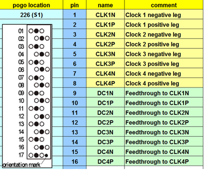

RF Pure Clock pogo pin assignment
The figure below shows the pogo pin assignment of the RF Pure Clock card. The default pogo location is 226.
| Supported V93000 systems : EXA Scale (SmarTest 8), Smart Scale (SmarTest 7+8), Pin Scale |
Note The underlying card is the same for SmarTest 7 and SmarTest 8. The
card is referred to as Port Scale RF Pure Clock card in SmarTest 7.

Functional changes
- Introduced in SmarTest 8.2.5